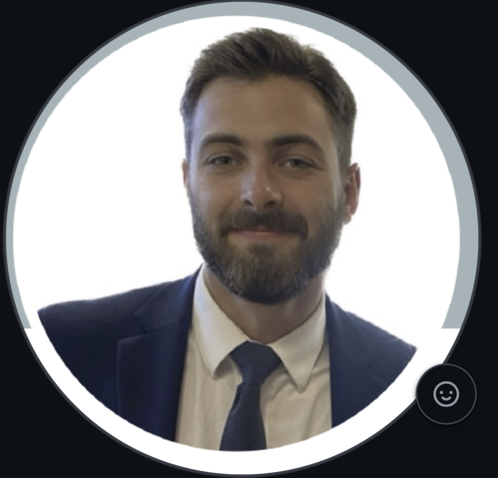

Current Members

Roberto Pili, M.D.
Principal Investigator
Roberto Pili, MD, is associate dean for cancer research and integrative oncology, and professor and chief of the Division of Hematology/Oncology in the Department of Medicine.
As associate dean, he is responsible for building the academic infrastructure for innovative and collaborative cancer research at UB and on the Buffalo Niagara Medical Campus, particularly in the areas of immunotherapies, drug development and delivery, epigenetics and lifestyle-dietary interventions. He is the founder of the UB Cancer Research Consortium.
As associate dean, he is responsible for building the academic infrastructure for innovative and collaborative cancer research at UB and on the Buffalo Niagara Medical Campus, particularly in the areas of immunotherapies, drug development and delivery, epigenetics and lifestyle-dietary interventions. He is the founder of the UB Cancer Research Consortium.

Sabrina Orsi
PhD Candidate
Sabrina has been a Ph.D. student in the Pili Lab since 2022 through the Department of Pharmacology and Toxicology. She graduated from Virginia Tech Polytechnic Institute and State University with B.S.’s in Biochemistry and Microbiology in 2020. Before coming to Buffalo, Sabrina worked in a Neuroscience lab as an Undergraduate Research Assistant.
Former Members

Tyler Gross
PhD Student
Tyler was a PhD student in the Pili lab from 2024 until 2025, focusing on bioinformatic analysis and pipeline development. Tyler now works in industry as a bioinformatics solutions engineer.